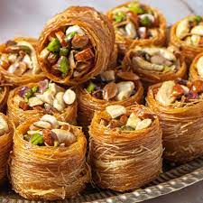

Baklava

Description
Baklava (/bɑːkləˈvɑː, ˈbɑːkləvɑː/or /bəˈklɑːvə/;Ottoman Turkish: باقلوا listen) is a layered pastry
dessert made of filo pastry, filled with chopped nuts, and sweetened with syrup or honey. It was one of the most
popular sweet pastries of Ottoman cuisine.
The pre-Ottoman origin of the dish is unknown, but, in modern times, it is a common dessert of Turkish, Iranian
and Arab cuisines, and other countries of the Levant and Maghreb, along with the South Caucasus, Greece,
Balkans, Somalia and Central Asia.
The Algerian Baklawa is distinct in that filo dough is not used, Instead, it is made up of multiple layers of
very thin dough that has been meticulously handcrafted. It's stuffed with ground almonds and walnuts and
flavored with orange blossom water before being cooked and drizzled in pure honey.
The popularity of baklava has long surpassed borders, regions, and ethnic groups to become a dessert whose
origin
and invention is claimed by numerous countries.
It is probable that it has an Assyrian origin, dating back to the 8th century, from where it spread out
throughout the region all the way to Greece. The Greeks altered the recipe and created the thin sheets, known
today as phyllo dough, but modern-day baklava is believed to be an original Turkish creation.
However, it is almost impossible to pinpoint baklava's exact place of origin, and the debate about its
authenticity is still going on between Türkiye and Greece. Traditionally, baklava is made with sheets of
paper-thin pastry at the bottom, followed by chopped nuts which are then topped with additional pastry layers.
Ingredients
- 1 (16 oz) package of phyllo (fillo) dough;thawed according to package instructions *Fillo dough should be
paper thin,even thinner than paper
- Butter
- Lemon juice
- Water
- Honey
- Finely crushed pistachios
- Cinnamon
- Vanilla
- Sugar
Steps
- Thaw phyllo dough according to package instructions (this is best done overnight in the fridge, then place
it on the counter for 1 hour before starting your recipe to bring it to room temp).
- Trim phyllo dough to fit your baking sheet. My phyllo dough package had 2 rolls with a total of 40 sheets
that measured 9×14 so I had to trim them slightly. You can trim one stack at a time then cover with a damp
towel to keep from drying out.
- Butter the bottom and sides of a 13×9 non-stick baking pan.
- Start with your honey sauce(which will need time to cool as your baklava bakes).
In a
medium saucepan, combine 1 cup sugar, 1/2 cup honey, 2 Tbsp lemon juice, and 3/4 cup water. Bring to a boil
over med/high heat, stirring until sugar is dissolved, then reduce heat to med/low and boil an additional 4
minutes without stirring. Remove from heat and let syrup cool while preparing baklava
- Assembling Baklava
Preheat oven to 325 fahrenheit
- Pulse walnuts about 10 times in a food processor until coarsely ground/ finely chopped. In a medium bowl,
stir together: 4 cups finely chopped walnuts and 1 tsp cinnamon
- Place 10 phyllo sheets into baking pan one at a time, brushing each sheet with butter once it’s in the pan
before adding the next (i.e. place phyllo sheet into pan, brush the top with butter, place next phyllo sheet
in pan, butter the top, etc. etc.).
Keep remaining phyllo covered with a damp towel at all times. Spread about 1/5 of nut mixture (about 3/4
cup) over phyllo dough.
- Add 5 buttered sheets of phyllo, then another layer of nuts. Repeat x 4. Finish off with 10 layers of
buttered phyllo sheets. Brush the very top with butter.Add 5 buttered sheets of phyllo, then another layer
of nuts. Repeat x 4. Finish off with 10 layers of buttered phyllo sheets. Brush the very top with butter.
- Cut pastry into 1 1/2″ wide strips, then cut diagonally to form diamond shapes. Bake at 325˚F for 1 hour and
15 min or until tops are golden brown
- Remove from oven and immediately spoon the cooled syrup evenly over the hot baklava (you’ll hear it sizzle).
This will ensure that it stays crisp rather than soggy. Let baklava cool completely, uncovered and at room
temperature
- Let baklava sit 4-6 hours or overnight at room temperature for the syrup to penetrate and soften the layers.
Garnish baklava with finely chopped nuts or drizzle with melted chocolate. Store at room temp, covered with
a tea towel for 1 to 2 weeks.